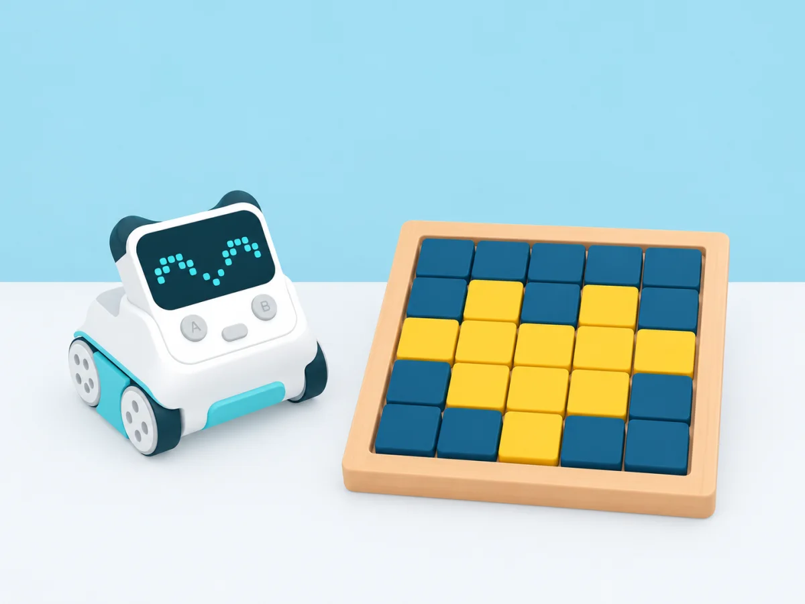

Dibuix per Píxels i Imatges Binàries
Com 'veu' i guarda un ordinador un dibuix? L'alumnat codifica i descodifica imatges senzilles en quadrícules
🎯 Aprenentatges i vocabulari
Com 'veu' i guarda un ordinador un dibuix? L'alumnat codifica i descodifica imatges senzilles en quadrícules utilitzant només els valors 0 (blanc) i 1 (negre).
🧰 Materials i preparació
- Fulls de quadrícula de 8x8 o 10x10 caselles
- Llapis o retoladors
Una plantilla per descodificar
Comenceu amb una graella de 5 × 5. Acordeu la convenció «0 és buit, 1 és pintat» i marqueu clarament el punt d'inici de cada fila. Una seqüència curta podria ser 1 1 1 0 0; llegiu-la d'esquerra a dreta abans de passar a la fila següent.

📅 Seqüència didàctica
Què és un píxel
Desenvolupament del pas
Mostrem una imatge a la pantalla fent molt de zoom fins que es vegin els quadradets individuals (píxels).
La regla del codi
Desenvolupament del pas
Cada casella blanca és un 0 i cada casella pintada de negre és un 1. Una línia com '0 1 1 0' vol dir: blanc, negre, negre, blanc.
Desxifrar el dibuix misteriós
Desenvolupament del pas
Cada alumne rep una targeta amb files de números binaris i ha de pintar la seva quadrícula per descobrir quina figura s'amaga (un cor, una fletxa, una cara).
Crear el propi missatge
Desenvolupament del pas
Ara fan el procés invers: dibuixen la seva icona i escriuen el codi numèric per passar-lo al company.
🧪 Evidències i avaluació
Recull la graella descodificada i demana que l'alumnat expliqui quina convenció ha utilitzat. Valora que mantingui la direcció de lectura, detecti una discrepància i utilitzi el codi per reconstruir el dibuix, no que ja conegui el sistema binari.
Preguntes per fer pensar
- Què passa amb el dibuix si llegim la fila al revés?
- Com sabem quantes caselles hi ha en cada fila si una xifra s'ha perdut?
- Com podem representar el mateix dibuix amb menys instruccions repetides?
♿ Participació, accessibilitat i seguretat
Ofereix una quadrícula amb contorn gruixut, peces negres per col·locar i una fila cada vegada. Per aprofundir, compareu una imatge de 5 × 5 i una de 10 × 10, parleu de resolució i anoteu quants bits calen per descriure cada graella.